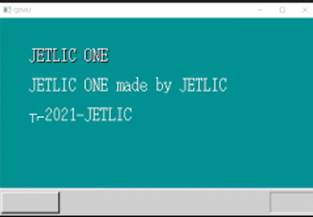
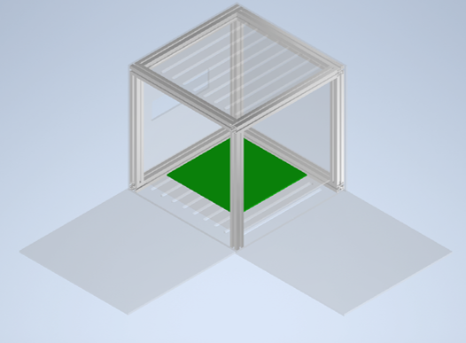
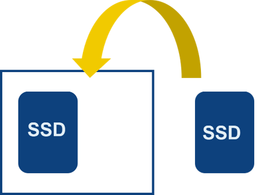

JETLIC ONEとは
JETLIC ONEはJETLICのメインプロジェクトです
子どもたちにモノづくりの楽しさを伝えられるようなコンピューターを制作することを目標にしています
ここではそんなプロジェクトの一部であるOS作りと本体づくりについて紹介します
JETLIC ONEのOS作りについて
JETLIC ONEでは制作するコンピューターに搭載するOSを1から自作しています
現在はJETLICのプログラム班が中心となって進めています
OSには子どもでも使いやすくするための機能を搭載予定です

↑現在作成中のOS
JETLIC ONEのコンピューターについて
JETLIC ONEのコンピューターのカバーはモノづくりやパソコンの仕組みに興味を持ってもらえるように全面が透明なアクリルでできています
コンピューターとしては珍しい一辺が20cmほどの立方体です
現在はメンバーで設計、加工などを行っています
パーツの一部を3Dプリンターで作るなどして子どもでも購入しやすい価格帯のコンピューターにしたいと思っています

↑JETLIC ONEをCADで制作中の様子
またSSDとメモリは必要なスペックに応じて知識がなくても簡単に取り替えることができるようになっています
それによって長く大切に使っていただけるコンピューターです
